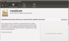
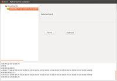
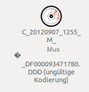
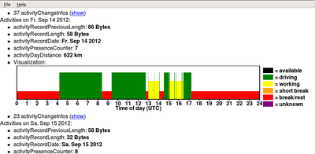

Fahrerkarte unter Linux
Dieser Artikel wurde für die folgenden Ubuntu-Versionen getestet:
Dieser Artikel ist mit keiner aktuell unterstützten Ubuntu-Version getestet! Bitte diesen Artikel testen und das getestet-Tag entsprechend anpassen.
Zum Verständnis dieses Artikels sind folgende Seiten hilfreich:
Fahrerkarte unter Linux  (Fahrlinx) ist ein Programm, mit dem man Fahrerkarten unter Linux auslesen kann. Fahrerkarten werden (nicht nur) in Deutschland bei Fahrzeugen ab 3,5 t zur Kontrolle der Lenk- und Ruhezeiten
(Fahrlinx) ist ein Programm, mit dem man Fahrerkarten unter Linux auslesen kann. Fahrerkarten werden (nicht nur) in Deutschland bei Fahrzeugen ab 3,5 t zur Kontrolle der Lenk- und Ruhezeiten  eingesetzt.
eingesetzt.
Auf der Karte sind die Daten für mindestens 28 Tage auslesbar, je nach Nutzung auch deutlich länger, da ältere Datensätze erst überschrieben werden, wenn der Kartenspeicher vollständig belegt ist. So kann es passieren, das sich unter Umständen noch mehrere Jahre alte Daten auf der Karte wiederfinden lassen. Die ausgelesenen Daten kann man mit dem Programm Readesm grafisch darstellen und archivieren.
Voraussetzungen¶
Um Fahrerkarten auslesen und graphisch darstellen zu können, werden ein Kartenleser (z.B. das oft verwendete Modell Cherry ST 1049UA ) und folgende Programme benötigt.
pcsc
(Gerätetreiber für Kartenleser)pyscard
(zum Auslesen)Readesm
(zum Darstellen und Archivieren)Fahrlinx selbst (zum Auslesen)
Bei Ubuntu Ubuntu 12.04 kann es sein, dass der Kartenleser automatisch erkannt wird. Nun mit folgendem Befehl [7] prüfen, ob der Kartenleser verwendet werden kann. Hierbei werden alle Geräte angezeigt, die mittels einer USB-Verbindung angeschlossen sind:
lsusb
Ist ein Kartenleser angeschlossen, könnte die Ausgabe wie folgt sein:
Bus 002 Device 003: ID 046a:002d Cherry GmbH SmartTerminal XX44
Installation¶
pcsc¶
Damit Kartenlesegeräte für Fahrerkarten richtig funktionieren, werden folgende Pakete benötigt [1]:
pcscd (universe)
libccid (universe)
 mit apturl
mit apturl
Paketliste zum Kopieren:
sudo apt-get install pcscd libccid
sudo aptitude install pcscd libccid
Nun wie oben prüfen, ob der Kartenleser verwendet wird.
pyscard¶
Zur Installation ist folgendes Paket erforderlich:
python-pyscard (universe)
mit apturl
Paketliste zum Kopieren:
sudo apt-get install python-pyscard
sudo aptitude install python-pyscard
Hinweis:
Die im Folgenden beschriebenen Programme Readesm und Fahrlinx sind nicht in den offiziellen Paketquellen enthalten. Zur Installation muss man auf ein "Personal Package Archiv" (PPA) [2] ausweichen. Dieses wird von Andreas Gölzer nur für Ubuntu 12.04 zur Verfügung gestellt.
Readesm¶

Ubuntu 12.04¶
Adresszeile zum Hinzufügen des PPAs:
ppa:k-2005/ppa
Hinweis!
Zusätzliche Fremdquellen können das System gefährden.
Ein PPA unterstützt nicht zwangsläufig alle Ubuntu-Versionen. Weitere Informationen sind der  PPA-Beschreibung des Eigentümers/Teams k-2005 zu entnehmen.
PPA-Beschreibung des Eigentümers/Teams k-2005 zu entnehmen.
Damit Pakete aus dem PPA genutzt werden können, müssen die Paketquellen neu eingelesen werden.
Nach dem Aktualisieren der Paketquellen kann folgendes Paket installiert werden:
readesm (ppa)
mit apturl
Paketliste zum Kopieren:
sudo apt-get install readesm
sudo aptitude install readesm
Verwendung¶
Nach der Installation kann Readesm über das Terminal aufgerufen werden [4]:
readesm
Für diesen Befehl kann man auch einen Programmstarter anlegen [5]:
Name:
ReadesmBeschreibung:
ReadesmBefehl:
readesm
Im Verzeichnis /usr/share/pixmaps/ befinden sich schon die Bilder readesm.png und readesm.svg, die man als Symbol für den Programmstarter nehmen kann. Das nebenstehende Symbol kann ebenfalls verwendet werden. Dieses herunterladen und mit folgendem Befehl in das Verzeichnis /usr/share/pixmaps/ verschieben:
sudo mv ./Downloads/readesmlogo.png /usr/share/pixmaps/
Mit Readesm können auch gespeicherte Fahrerdaten zu Auswertungszwecken aufgerufen werden, sofern diese Daten im .DDD-Format vorliegen.
Fahrlinx¶
PPA¶
Das PPA unterstützt nur Ubuntu 12.04.
Adresszeile zum Hinzufügen des PPAs:
ppa:k-2005/ppa
Hinweis!
Zusätzliche Fremdquellen können das System gefährden.
Ein PPA unterstützt nicht zwangsläufig alle Ubuntu-Versionen. Weitere Informationen sind der PPA-Beschreibung des Eigentümers/Teams k-2005 zu entnehmen.
Damit Pakete aus dem PPA genutzt werden können, müssen die Paketquellen neu eingelesen werden.
Nach dem Aktualisieren der Paketquellen kann folgendes Paket installiert werden:
fahrlinx (ppa)
mit apturl
Paketliste zum Kopieren:
sudo apt-get install fahrlinx
sudo aptitude install fahrlinx
Bedienung¶
Fahrlinx¶

Wenn Fahrlinx gestartet wird, erstellt das Programm im Verzeichnis ~/Dokumente/fahrlinx/ eine neue Datei Fahrlinx.pyc
Den Kartenleser anschließen und die Fahrerkarte einstecken
Fahrlinx starten. Im Startfenster auf der linken Seite wird die Fahrerkarte als erkannt angezeigt. Mit einem Doppelklick
 die erkannte Fahrerkarte markieren. Im unteren Teil des Startfensters werden weitere Zeilen sichtbar und im rechten Teil steht "Selected card". Die Schaltfläche Start ist noch nicht aktiv!
die erkannte Fahrerkarte markieren. Im unteren Teil des Startfensters werden weitere Zeilen sichtbar und im rechten Teil steht "Selected card". Die Schaltfläche Start ist noch nicht aktiv!
Nun mit einem Linksklick auf "Smartcards" die Karte abwählen. Im rechten Teil des Startfensters steht "Deselected card: none". Durch einen erneuten Linksklick auf die erkannte Fahrerkarte wird diese wieder markiert und im rechten Teil vom Startfenster die Schaltfläche "Start" aktiviert.
Nun mit einem Linksklick auf die Schaltfläche "Start" das Auslesen der Fahrerkarte starten. Die markierte Fahrerkarte wird dann grau hinterlegt dargestellt. Eine Anzeige, das Fahrlinx fertig ist, erfolgt leider nicht. Die Lampe des Kartenlesers hört nach Beendigung des Auslesens auf zu blinken. Die ausgelesene .DDD-Datei befindet sich im Homeverzeichnis.

Ist Readesm installiert, trägt die Datei bereits das Symbol von Readesm. Die Datei kann bei Sonderzeichen im Namen eine ungültige Kodierung haben. Dann die Datei einfach umbenennen, z.B. in Max Mustermann.DDD. Nun mit einem Doppelklick die Datei mit Readesm öffnen und die Daten anzeigen lassen.
Fahrerkartendatei auswerten¶
Zum Auswerten der Fahrerkartendatei Readesm starten und die Datei öffnen. Die Datei kann dann gespeichert oder in das Format .xhtml exportiert werden. Die Ansicht ist bei beiden Formaten gleich.
Legende¶
Die Readesm-Daten werden in der Anzeige farblich markiert:
Gelb = Arbeitszeit
Lila = Karte nicht im Fahrtenschreiber
Grün = Fahren
Rot = gültige Lenkzeitunterbrechung / Ruhezeit / Pause
braun = kurze Pause / keine gültige Pause

- Erstellt mit Inyoka
-
 2004 – 2017 ubuntuusers.de • Einige Rechte vorbehalten
2004 – 2017 ubuntuusers.de • Einige Rechte vorbehalten
Lizenz • Kontakt • Datenschutz • Impressum • Serverstatus -
Serverhousing gespendet von